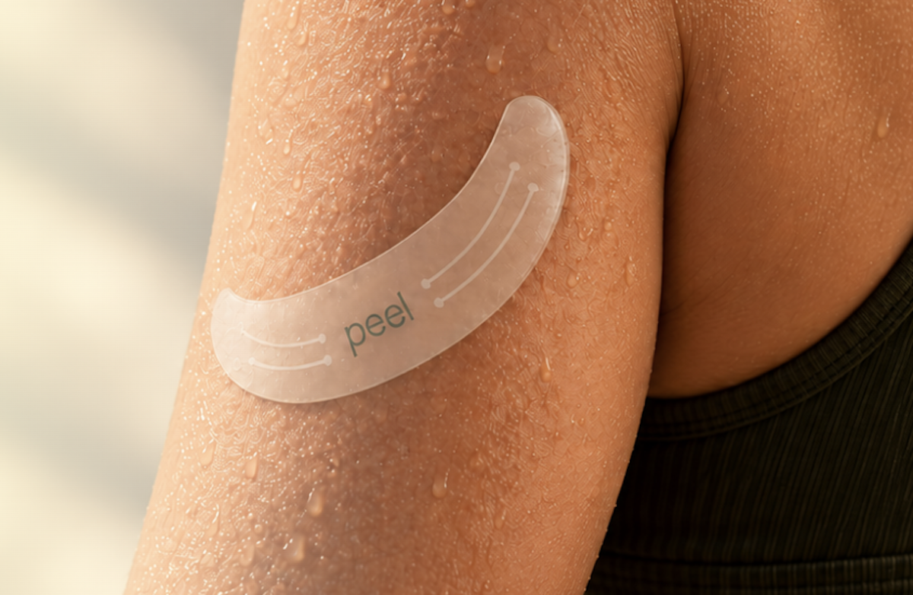
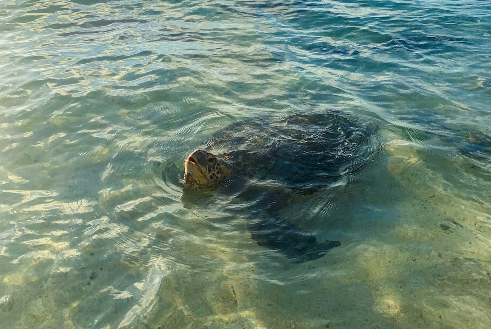
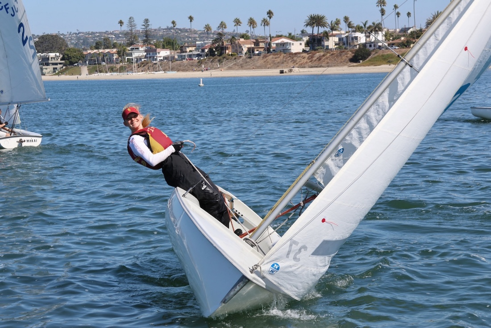

Project Highlights

Sweat Collecting Patch for Stress Hormone Monitoring
A wearable concept for emerging microfluidic technology applications taken from literature review to pitch deck.

Aptamer Biosensor for Lupus
A gen-ML framework for health tech involving material science, bio-chemistry, and product.

Using ML to Save my Hometown Sea Turtles
A model with 95% prediction accuracy for conservation purposes.

Off the Clock
I grew up in Hawaiʻi, where I became an avid, competitive sailor. I race to this day, and navigating the wind and water has taught me to make fast decisions from imperfect data. On land, I volunteer with Mālama I Nā Honu, a sea turtle non-profit, where I have also applied machine learning to conservation fieldwork.